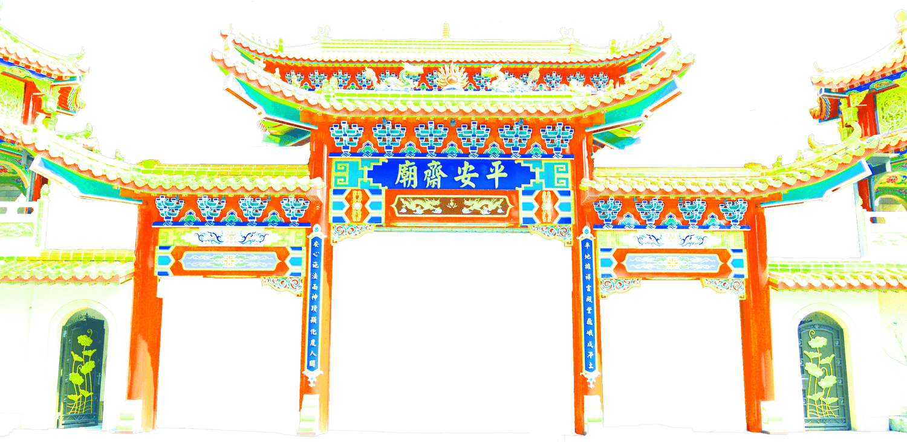
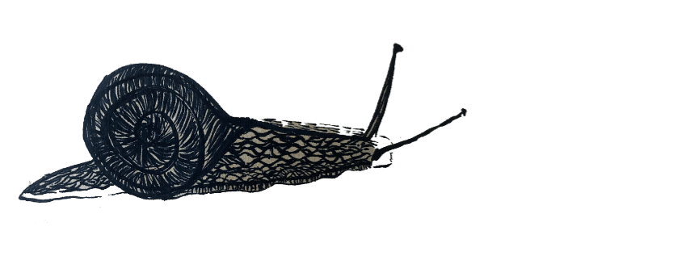
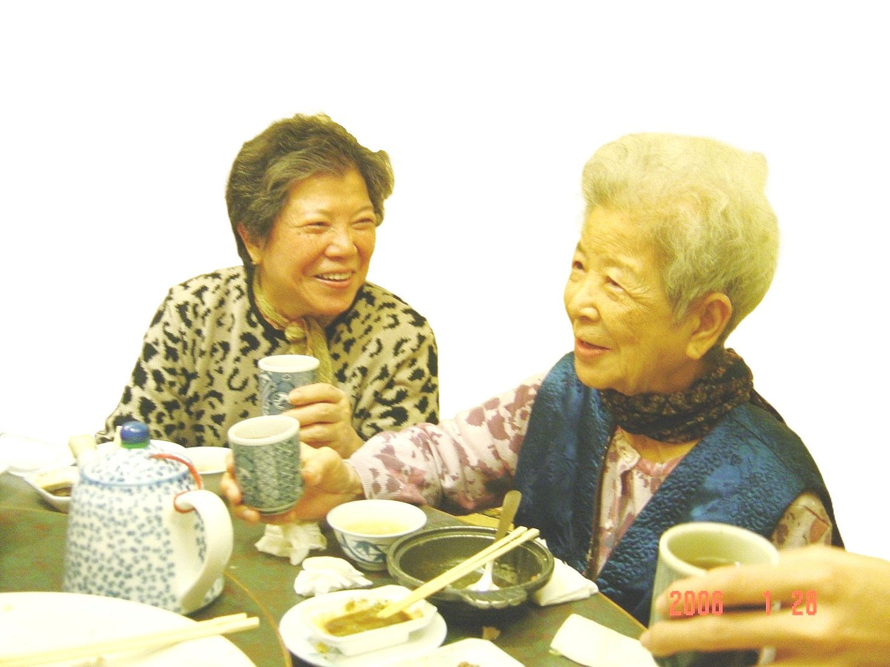
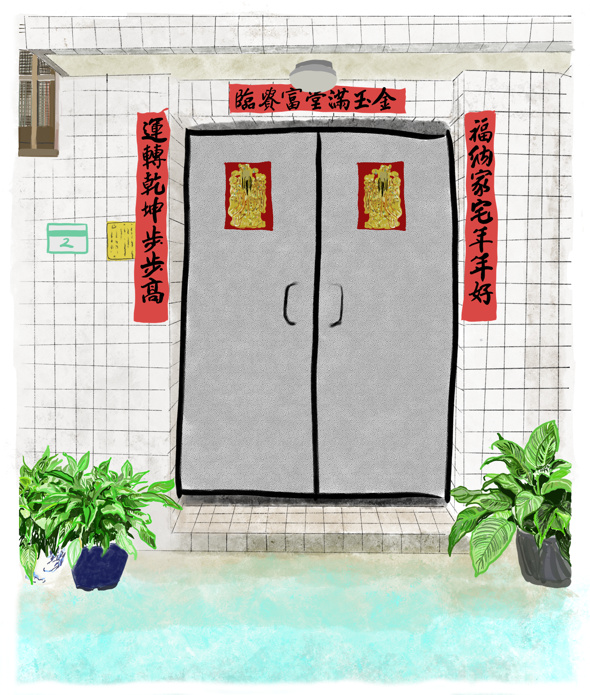
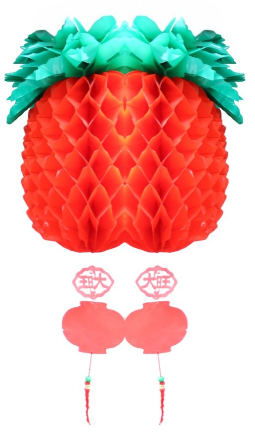
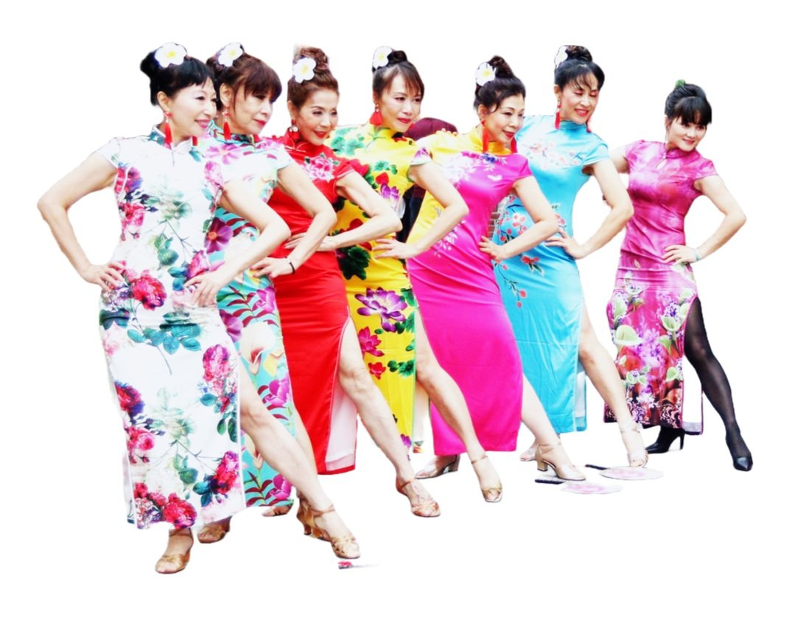

crying in temples


A place of solitude and communion
companionship from snails and centipedes
along side me as tears fell
for the loss of my 阿媽 (grandma) and cousin,
a childhood never shared,
relationships never built,
a language eroding over the years
and a mother tongue never learned.
taiwanese class
Li bhe kee
Round nasal sounds
Emerging deep from my core.
Guttural tones that bring comforts
without comprehension.
The mothers’ voice
Left at home, an ocean away.
A dialect not learned from family
But among peers in a classroom.
Gua mah see
Round nasal sounds
As we repeat after the teacher
Her tones reverberating in my throat
Now suddenly have meaning.

男重輕女
preference of sons over daughters

My grandfather arrives at heaven’s gate
bowing to our ancestors
full of regret and despair.
Empty handed,
his accomplishments mean nothing
after failing to produce a grandson,
the 周 line ends with him.

As I sit at the dinner table,
I look at my family,
my family looks at their phones.
I struggle to make sense of my place
as the blue haired cousin
who suddenly reappears,
seeking a connection
facing mutual disconnection.
“you’re not what a daughter is expected to be”

“you dye your hair back to black or you don’t come to the funeral”
A lifetime of separation
dissipates,
as we share our meals once again.
你回來了
I have returned.
And festering anguish washes away.